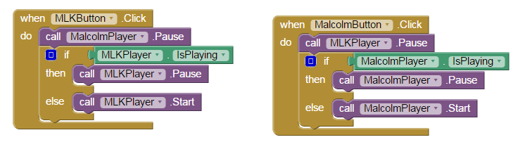

'I Have a Dream' Media Player App
Created: February 5, 2015
This mobile application plays Martin Luther King's 'I Have a Dream' speech, as well as a clip from Malcolm X. It was created in the course Game Design 2 using MIT App Inventor, and their tutorial which can be found here.
The code, in the form of a block interface, detects when either the MLK or Malcolm buttons are pressed. When selected, the other player is paused and the selected player is either played or paused according to its current state.
